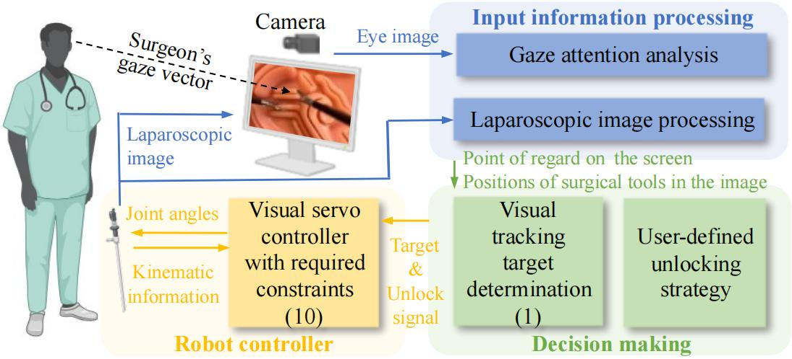

The procedure of laparoscopic minimally invasive surgery (MIS) heavily relies on the effective and efficient adjustment of the laparoscopic field-of-view (FoV). However, most existing robot-assisted laparoscopic FoV adjustment methods either require additional surgeon interactions or neglect surgeon's intentions. This letter therefore proposes GazeScope, a novel framework for automatic laparoscopic FoV adjustment, which considers gaze attention, the positions of surgical tools in the image, and the eye-hand consistency. A gaze attention-based FoV unlocking strategy is proposed to identify and eliminate unnecessary FoV adjustments, thereby improving the stability of the surgical view. Compared to traditional image-based visual servoing (IBVS) methods, GazeScope offers FoV adjustment that better aligns with manual adjustments by professionals. Meanwhile, GazeScope reduces unnecessary FoV adjustments by at least 66% and adjusting time by 50% in representative test cases, demonstrating its ability to provide a more stable operational view.

1) Target determination: The target is determined by the surgeon's gaze attention and the position of the surgical tool in the image.
2) FoV unlocking: The FoV is unlocked by the user-defined gaze attention-based FoV unlocking strategy.
@ARTICLE{11003575,
author={Zhang, Jing and Wang, Baichuan and Pan, Zhijie and Li, Mengtang},
journal={IEEE Robotics and Automation Letters},
title={GazeScope: A Framework of Gaze Attention-Based Automatic Field-of-View Adjustment for Laparoscopic Robots},
year={2025},
volume={10},
number={7},
pages={6560-6567},
keywords={Laparoscopes;Robots;Target tracking;Surgery;Cameras;Visualization;Estimation;Three-dimensional displays;Vectors;Training;Surgical robotics;laparoscopy;visual servoing},
doi={10.1109/LRA.2025.3570158}}